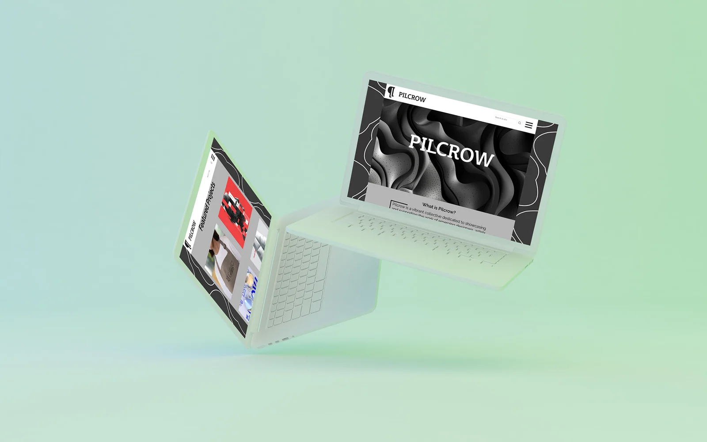
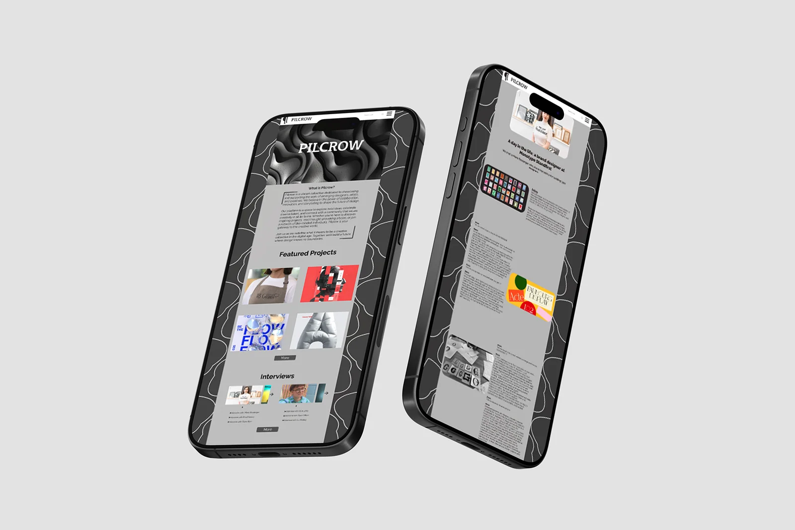
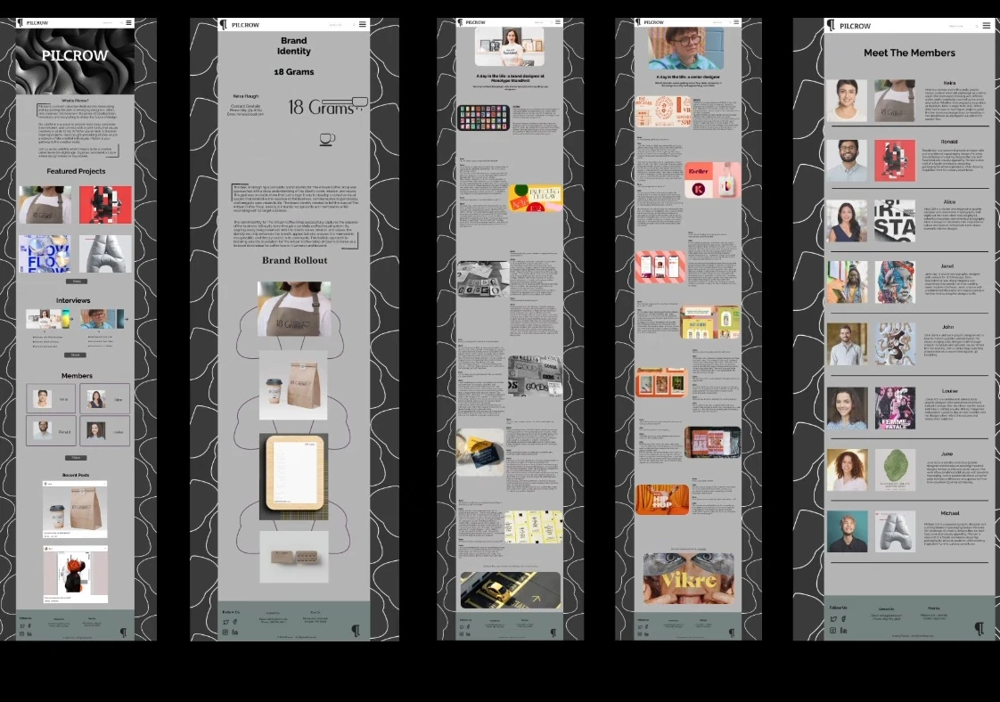

College project · Web design
Pilcrow
A Figma website for a fictional creative collective to share artists’ work.

Project brief
Design a website for Pilcrow, a fictional creative collective, to showcase artists’ work and highlight member contributions.
My role
Designer (student)
Process & sketches
I designed the collective’s website in Figma, organising projects, interviews and member features into repeatable layouts.
Design decisions
A recurring wavy line connects the pages. Muted surfaces leave room for the artists’ colours, and a modular grid carries the content from desktop to mobile.
Outcome
The final designs show how a visitor moves from the collective’s homepage to individual projects and interviews.
Design details



